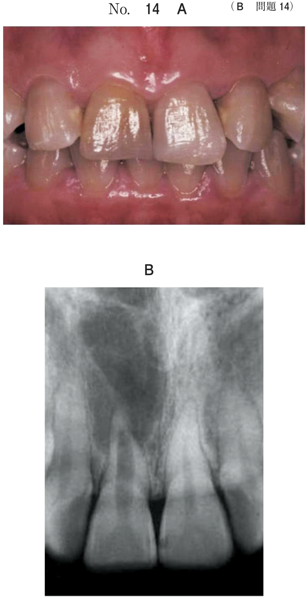
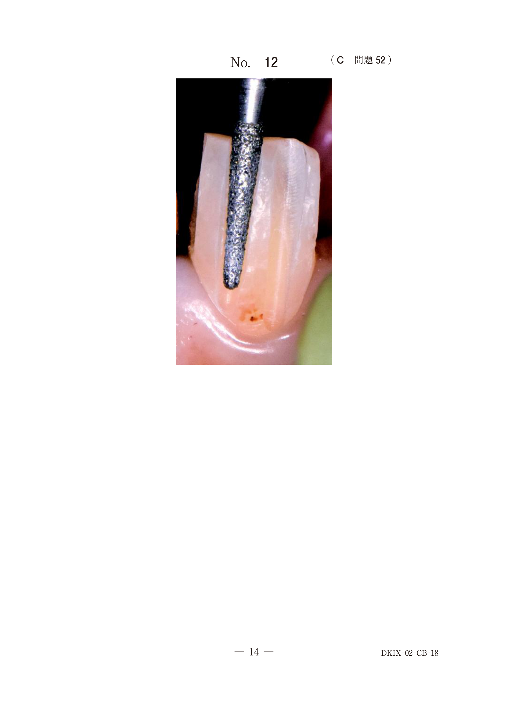
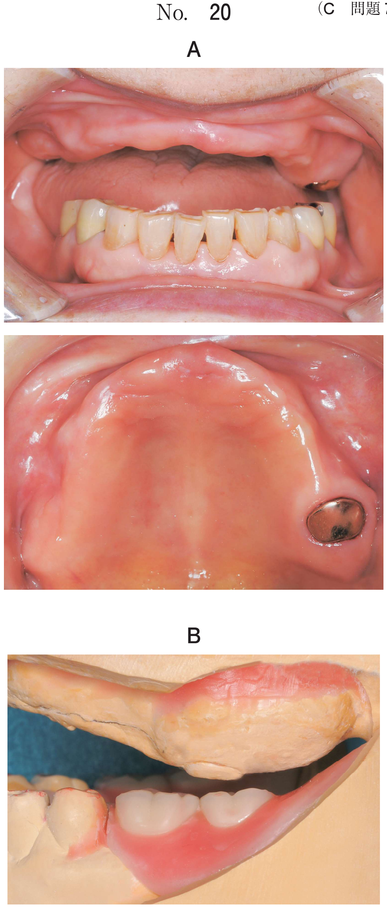
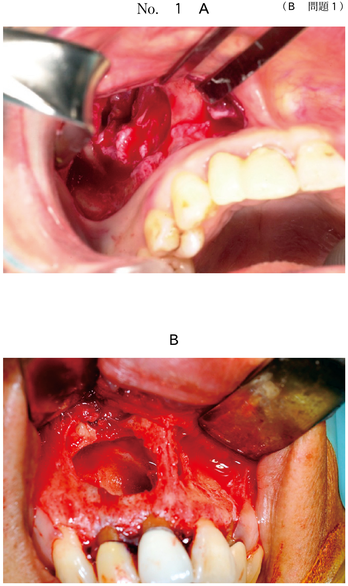

隣接する歯間を分離し、隣接面の検査・修復操作を的確に行うための方法。
| 分類 | 器具 | 特徴 |
|---|---|---|
| くさび分離型 | ウッドウェッジ（木製） | 最も一般的 |
| 透明ウェッジ（プラスチック製） | 光導型、光重合時に有利 | |
| アイボリーのシンプルセパレーター | 前歯部用 | |
| エリオットのセパレーター | 臼歯部用 | |
| 牽引分離型 | フェリアーのセパレーター | 大部分の歯に適用可 |
| トルーのセパレーター | 大部分の歯に適用可 |
即時分離が困難な臼歯部に適用する。
歯間分離で牽引の原理を利用するのはどれか。1つ選べ。
【解説】牽引分離型セパレーターはフェリアーとトルー。弾性ゴムは緩徐歯間分離法、ウッドウェッジ・エリオット・アイボリーはくさび分離型である。
21歳の女性。上顎左側第一小臼歯と第二小臼歯との冷水痛を主訴として来院した。コンポジットレジン修復を行うこととした。初診時の口腔内写真（別冊No.20A）と齲蝕除去中の口腔内写真（別冊No.20B）とを別に示す。 矢印で示す器具の使用目的はどれか。1つ選べ。

【解説】写真に示されているのはウェッジ（くさび）。プレウェッジとして窩洞形成前に挿入することで、歯間乳頭を保護する。接触点の回復は修復後の話であり、この段階での目的ではない。
60歳の男性。下顎左側第一大臼歯の違和感を主訴として来院した。10年前に齲蝕治療のため間接修復を受け問題なく経過していたが、1か月前から気になるようになったという。検査の結果、齲蝕と診断し、補修修復を行うこととした。初診時のエックス線画像（別冊No.18A）と齲蝕除去中の口腔内写真（別冊No.18B）を別に示す。 次に行うのはどれか。1つ選べ。

【解説】齲蝕除去後、隣接面窩洞の修復に際して次に行うのはウェッジ挿入。歯間乳頭を保護しつつ、隔壁（マトリックス）装着の準備を行う。マトリックス挿入はウェッジ挿入の後である。
20歳の男性。上顎右側第二小臼歯の一過性の冷水痛を主訴として来院した。6か月前から気付いていたが、強い痛みがないためそのままにしていたという。他に症状はない。プロービングデプスは全周2mmであった。象牙質齲蝕と診断し齲蝕除去を行うこととした。初診時の口腔内写真（別冊No.26A）とエックス線画像（別冊No.26B）を別に示す。 処置に際し必要なのはどれか。3つ選べ。

【解説】隣接面齲蝕の処置に必要なのは、齲蝕検知液（感染象牙質の確認）、ラバーダム防湿（CR修復の基本）、ウッドウェッジ挿入（歯間分離・歯間乳頭保護）。セクショナルマトリックスは充填時に使用するが、この問題は「齲蝕除去を行う」段階であり、まだ充填段階ではない。Ivoryのセパレーターは前歯部用であり、小臼歯には不適。
24歳の男性。上顎右側第二小臼歯の違和感を主訴として来院した。初診時の口腔内写真（別冊No.2A)、 エックス線写真（別冊No.2B）及び器具の写真（別冊No.2C）を別に示す。 検査に使用するのはどれか。2つ選べ。

【解説】隣接面齲蝕の検査には、デンタルフロス（イ）と透照診用ライト（ウ）を使用する。歯間分離により隣接面を視診・触診しやすくすることが検査の第一歩である。